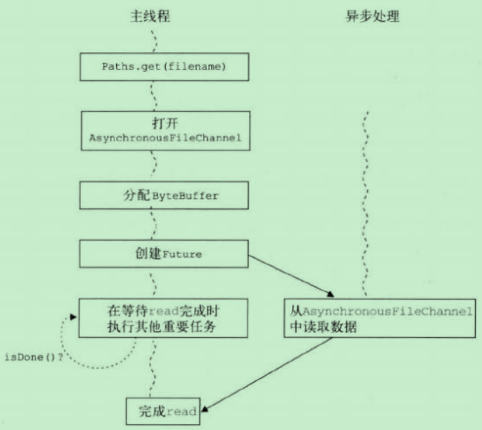

AIO也就是NIO.2，AIO相对于BIO提供了另一个新特性是异步能力，这种能力对于套接字和文件IO都适用。AIO其实只是一种在读写操作结束前允许进行其他操作的IO处理。
基于文件的AIO
Java7中有三个新的异步通道：
- AsynchronousFileChannel~用于文件IO;
- AsynchronousSocketChannel~用于套接字IO，支持超时；
- AsynchronousServerSocketChannel~用于套接字接收异步连接。
使用AIO的API时，主要有两种形式，将来式和回调式
将来式
使用场景
当希望由主线程发起IO操作并轮询等待结果时，一般都会用将来式来异步处理结果。
将来式用现有的java.util.concurrent技术声明一个Future，用来保存异步操作的处理结果。这很关键，因为这意味着当前线程不会因为较慢的IO操作而停滞。相反，有一个单独的线程发起IO操作，并在操作完成时返回结果。与此同时，主线程可以继续执行其他需要完成的任务。在其他任务结束后，如果IO操作还没有完成，主线程会一直等待。流程图如下图所示：

代码实现如下
1
2
3
4
5
6
7
8
9
10
11
12
13
14
15
16
17
18
19
20
21
22
23
| import java.nio.ByteBuffer;
import java.nio.channels.AsynchronousFileChannel;
import java.nio.file.Path;
import java.nio.file.Paths;
import java.util.concurrent.Future;
public class AIOFutureMode {
public static void main(String[] args) {
try {
Path file = Paths.get("./logs/error.log");
AsynchronousFileChannel channel = AsynchronousFileChannel.open(file);
ByteBuffer buffer = ByteBuffer.allocate(100000);
Future<Integer> result = channel.read(buffer, 0);
while (!result.isDone()) {
System.out.println("calculateTax");
}
Integer bytesRead = result.get();
System.out.println("Bytes read [" + bytesRead + "]");
} catch (Exception e) {
System.out.println(e.getMessage());
}
}
}
|
回调式
使用场景
在异步事件刚一成功或失败并需要马上采取行动时，一般采用回调式。
回调式的基本思想是主线程会派一个侦探员CompletionHandler到独立的线程中执行IO操作。这个侦探员将带着IO操作的结果返回到主线程中，这个结果会触发它自己的complete或failed方法(这两个方法需要重写)。处理流程图如下：
代码实现如下
1
2
3
4
5
6
7
8
9
10
11
12
13
14
15
16
17
18
19
20
21
22
23
24
25
26
27
28
29
| import java.nio.ByteBuffer;
import java.nio.channels.AsynchronousFileChannel;
import java.nio.channels.CompletionHandler;
import java.nio.file.Path;
import java.nio.file.Paths;
public class AIOCallBackMode {
public static void main(String[] args) {
try {
Path file = Paths.get("./logs/error.log");
AsynchronousFileChannel channel = AsynchronousFileChannel.open(file);
ByteBuffer buffer = ByteBuffer.allocate(100_000);
channel.read(buffer, 0, buffer, new CompletionHandler<Integer,ByteBuffer>() {
@Override
public void completed(Integer result, ByteBuffer attachment) {
System.out.println("Bytes read [" + result + "]");
}
@Override
public void failed(Throwable exc, ByteBuffer attachment) {
System.out.println(exc.getMessage());
}
});
} catch (Exception e) {
System.out.println(e.getMessage());
}
}
}
|
基于Socket的AIO
NetworkChannel
java.nio.channels.NetworkChannel代表一个连接到网络套接字通道的映射。
MulticastChannel
IP多播。